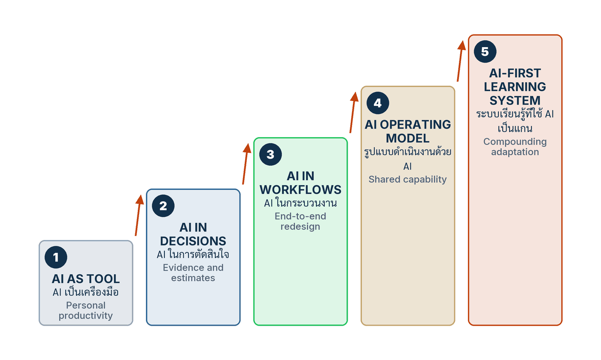

ในบทความนี้
- ทำไมจำนวน Pilot ไม่ใช่วุฒิภาวะ
- ห้าระดับ และหลักฐานที่ต้องมีจริงในแต่ละระดับ
- Exit Gate — ขยับระดับด้วยหลักฐาน ไม่ใช่ด้วยเวลา
- Kiri Foods — ไต่จาก Explore ถึง Integrate แล้วเลือกหยุด
- Authority debt — หนี้อำนาจที่ไม่มีใครบันทึก
- เวิร์กช็อป Maturity evidence review หกขั้น
- ตัวชี้วัดสำคัญ และรูปแบบความล้มเหลว
- ก้าวต่อไป — จากระดับ สู่พอร์ตโฟลิโอการตัดสินใจ
In this post
- Why Pilot Count Is Not Maturity
- Five Levels, and the Evidence Each One Actually Requires
- Exit Gate — Advance on Evidence, Not on Time
- Kiri Foods — From Explore to Integrate, Then a Deliberate Stop
- Authority Debt — The Liability Nobody Records
- The Six-Step Maturity Evidence Review
- Metrics That Matter, and the Failure Patterns
- The Road Ahead — From Levels to a Decision Portfolio
🤔 องค์กรหนึ่งค้นเอกสารด้วย AI ได้เก่งมาก ทีมงานใช้คล่อง ผลลัพธ์ดี แต่ยังไม่พร้อมให้ AI อนุมัติสินเชื่อแม้แต่รายเดียว — ตกลงองค์กรนี้มีวุฒิภาวะด้าน AI อยู่ที่ระดับไหน?
ตอนที่แล้วของซีรีส์นี้ — Build a Learning System — วงจรการเรียนรู้ที่คู่แข่งซื้อไม่ได้ — จบลงที่ข้อสรุปว่าสิ่งที่องค์กรสร้างขึ้นได้จริงคือ วงจรการเรียนรู้ (learning loop) ที่หมุนเร็วกว่าสภาพแวดล้อมเปลี่ยน ไม่ใช่กองโมเดลหรือกองเครื่องมือ คำถามที่ตามมาทันทีคือคำถามที่ผู้บริหารทุกคนต้องตอบก่อนอนุมัติงบก้อนถัดไป: แล้วตอนนี้ เราอยู่ตรงไหน และเราพร้อมจะให้ AI ทำอะไรได้มากกว่าที่ทำอยู่หรือยัง
คำตอบของบทนี้สั้นและขัดกับสัญชาตญาณของแดชบอร์ดผู้บริหารเกือบทุกแผ่น: วุฒิภาวะไม่ใช่คะแนนขององค์กร แต่เป็นคุณสมบัติของ Workflow แต่ละเรื่อง และมันวัดจากหลักฐานที่พิสูจน์แล้วว่าคุณควบคุมงานนั้นได้ในระดับอำนาจ ผลกระทบ และการพึ่งพาที่คุณประกาศไว้ ไม่ใช่จากจำนวน Pilot จำนวน License หรือจำนวนคนที่ผ่านการอบรม Prompt
1. ทำไมจำนวน Pilot ไม่ใช่วุฒิภาวะ
ลองนึกถึงสไลด์ที่เราเห็นกันจนชิน: จำนวน Pilot ที่ปิดจบในไตรมาสนี้ จำนวน License ที่ซื้อให้พนักงาน จำนวนคนที่ผ่านคอร์ส Prompt engineering แล้วสรุปทั้งหมดเป็นตัวเลขเดียวว่า "องค์กรเราอยู่ระดับกลางค่อนไปทางดี" ปัญหาของสไลด์แผ่นนั้นไม่ใช่ว่ามันโกหก แต่คือมันวัดผิดสิ่ง — มันวัด กิจกรรม ไม่ได้วัด ความสามารถที่พิสูจน์แล้ว
คู่มือเล่มที่ซีรีส์นี้เดินตาม[1] วางนิยามไว้ตรงข้ามกับธรรมเนียมนั้นทั้งหมด: วุฒิภาวะด้าน AI ไม่ได้วัดจากจำนวน Pilot, License หรือจำนวนคนที่ผ่านการอบรม Prompt แต่วัดจาก ความสามารถที่พิสูจน์แล้วว่าองค์กรใช้งาน AI ได้ภายใต้ระดับอำนาจ ผลกระทบ และการพึ่งพาที่ระบุชัด ประโยคนี้มีสามคำที่ต้องอ่านช้า ๆ
- อำนาจตัดสินใจ (decision authority) — ผลจากโมเดลมีน้ำหนักแค่ไหนในการตัดสินใจครั้งนั้น เป็นแค่ข้อเสนอที่มนุษย์อ่านผ่าน ๆ เป็นร่างที่มีคนเซ็นรับผิดชอบ หรือเป็นการกระทำที่เกิดผลจริงในระบบภายนอก
- ระดับผลกระทบ (consequence) — ถ้าผลลัพธ์ผิด ความเสียหายกลับคืนได้ไหม ใครเป็นคนรับ และรับได้ในกรอบเวลาเท่าไร งานค้นเอกสารที่ผิดแล้วผู้ใช้กดค้นใหม่ กับงานอนุมัติสินเชื่อที่ผิดแล้วมีคนเสียสิทธิ์ ไม่ใช่ปัญหาชนิดเดียวกัน
- การพึ่งพา (dependency) — ถ้าถอดโมเดลออกวันนี้ กระบวนการยังเดินได้ไหม ช้าลงเท่าไร และมีเส้นทางสำรองที่เคยซ้อมจริงหรือเปล่า
เมื่อวางสามมิตินี้ลงไป ข้อสรุปที่ตามมาก็หลีกเลี่ยงไม่ได้ — และคู่มือเขียนไว้ตรง ๆ ว่า "องค์กรเดียวกันอาจพร้อมในงานค้นเอกสาร แต่ยังไม่พร้อมในงานอนุมัติสินเชื่อ วุฒิภาวะจึงเป็นคุณสมบัติของ Workflow แต่ละเรื่อง ไม่ใช่ป้ายองค์กรเพียงค่าเดียว"[1] องค์กรที่ประกาศคะแนนวุฒิภาวะเป็นตัวเลขเดียว กำลังเฉลี่ยงานที่คุมได้ดีมากเข้ากับงานที่ยังไม่มีแม้แต่เจ้าของ แล้วได้ตัวเลขที่ไม่ตรงกับความจริงของงานไหนเลยสักงานเดียว
มีอีกด้านหนึ่งของเรื่องเดียวกันที่ผมได้ยินบ่อยจากผู้บริหารไทย — การซื้อ License ให้คนทั้งองค์กรแล้วนับว่านั่นคือการเปลี่ยนผ่าน คลิปบรรยาย The Masterclass EP01 ที่คู่มือเล่มนี้อ้างถึง[2] พูดประเด็นนี้ไว้ตรงกัน (ผมถอดความ ไม่ใช่คำต่อคำ เพราะคำบรรยายอัตโนมัติภาษาไทยของคลิปมีข้อผิดพลาดในการรู้จำเสียงหลายจุด): การซื้อ License ให้คนทั้งองค์กรคือเส้นเริ่มต้น ไม่ใช่เส้นชัย และการที่หลายองค์กรยังอยู่ระหว่างขั้นแรก ๆ ของเส้นทางไม่ใช่เรื่องผิด — สิ่งที่ผิดคือการเข้าใจว่าการถือครองเครื่องมือเท่ากับการเปลี่ยนแปลงองค์กร
ผมอยากเสริมจากประสบการณ์ตรวจงานจริงว่า อาการนี้มองเห็นได้ง่ายมากด้วยคำถามเดียว: ขอดู หลักฐาน ของ Workflow ใด Workflow หนึ่งที่คุณบอกว่า "ทำเสร็จแล้ว" — ใครเป็นเจ้าของ ชุดประเมินอยู่ไหน ค่าฐานก่อนใช้ AI คือเท่าไร Rollback ซ้อมครั้งล่าสุดเมื่อไร ถ้าคำตอบทั้งสี่ข้อคือความเงียบ ตัวเลข Pilot บนสไลด์ก็เป็นเพียงบันทึกว่าเราเคย ลอง อะไรบ้าง ไม่ใช่บันทึกว่าเรา ควบคุม อะไรได้แล้ว
2. ห้าระดับ และหลักฐานที่ต้องมีจริงในแต่ละระดับ
เมื่อเลิกวัดเป็นคะแนนองค์กรแล้ว เราต้องการมาตรวัดที่ใช้กับ Workflow เดี่ยว ๆ ได้ คู่มือเสนอบันไดห้าขั้น พร้อมคำเตือนที่ต้องอ่านก่อนใช้เสมอ — "คู่มือนี้ใช้ห้าระดับเพื่อการปฏิบัติ ซึ่งเป็นการสังเคราะห์ของผู้เขียน ไม่ใช่มาตรฐานอุตสาหกรรมที่ผ่านการรับรอง"[1] ประโยคนี้สำคัญพอที่ผมจะยกมาทั้งประโยค เพราะบันไดวุฒิภาวะเป็นสิ่งที่ถูกนำไปใช้ผิดง่ายที่สุด — พอมันดูเหมือนมาตรฐาน คนก็เริ่มใช้มันเป็นเกณฑ์จัดซื้อ เป็นตัวเลขรายงานผู้ถือหุ้น หรือเป็นข้อเปรียบเทียบกับคู่แข่ง ทั้งที่มันถูกออกแบบมาเพื่อทำสิ่งเดียว คือช่วยให้ทีมตอบให้ได้ว่า งานตรงหน้ามีหลักฐานพอที่จะเพิ่มอำนาจให้ AI หรือยัง
สิ่งที่ทำให้บันไดนี้ใช้งานได้จริง ไม่ใช่ชื่อของระดับ แต่คือคอลัมน์ขวาสุด — หลักฐานที่ต้อง มีอยู่จริงและตรวจได้ ก่อนจะเรียกว่าอยู่ระดับนั้น
| # | Level | AI authority | Evidence that must exist |
|---|---|---|---|
| 1 | Explore สำรวจ |
ไม่มีอำนาจในระบบจริง | ทดลองในพื้นที่ปิด ไม่ใช้ข้อมูลคุ้มครอง และบันทึกคำถามที่ต้องการเรียนรู้ |
| 2 | Assist ช่วยงาน |
เสนอหรือร่างงานในขอบเขตแคบ มนุษย์ตัดสินใจ | มีผู้รับผิดชอบตัดสินใจขั้นสุดท้าย คู่มือผู้ตรวจ และค่าฐานด้านเวลาและคุณภาพ |
| 3 | Manage บริหารอย่างเป็นระบบ |
ยังไม่เพิ่มอำนาจ แต่ทำให้สิ่งที่ทำอยู่ทวนซ้ำได้ | จัดรุ่นของแม่แบบบริบท ช่องทางข้อมูล ชุดประเมิน เกณฑ์ เจ้าของ และประวัติการเปลี่ยนแปลง การปล่อยรุ่นต้องผ่านหลักฐาน |
| 4 | Integrate บูรณาการ |
อยู่ใน Workflow ตั้งแต่ต้นจนจบผ่านจุดเชื่อมที่ควบคุม | มีสิทธิ์เท่าที่จำเป็น Trace, Fallback, Monitoring และ Incident Response ที่ทำงานจริง |
| 5 | Operate as AI-core ปฏิบัติการแบบ AI-core |
ผลจากโมเดลมีอำนาจสูงในงานที่ประกาศไว้ และถอดออกแล้วผลงานต่ำกว่าเกณฑ์ | Assurance เต็มรูปแบบ การทดสอบท้าทาย ความสามารถกู้คืน และการทบทวนคุณค่า ความเสี่ยง และต้นทุนต่อเนื่อง |
สังเกตว่าระดับ 3 บริหารอย่างเป็นระบบ ไม่ได้เพิ่มอำนาจให้ AI เลยแม้แต่นิดเดียว มันเพิ่มแค่ความสามารถในการทำซ้ำและตรวจสอบ นี่คือขั้นที่องค์กรไทยจำนวนมากข้ามไป เพราะมันไม่มีอะไรใหม่ให้โชว์ — ไม่มีฟีเจอร์ ไม่มีเดโม มีแต่ทะเบียน ชุดประเมิน และประวัติการเปลี่ยนแปลง แต่มันคือขั้นเดียวที่ทำให้ขั้นที่ 4 และ 5 เป็นไปได้อย่างปลอดภัย
คำว่า "ระดับที่บันทึกไว้" ในย่อหน้าข้างบนไม่ใช่สำนวน มันคือเอกสารจริงที่ต้องมีเจ้าของและวันทบทวน แนวคิดแบบนี้มีที่ทางในโลกมาตรฐานอยู่แล้ว: ระบบการจัดการ AI (AI management system) ตาม ISO/IEC 42001[3] คือข้อกำหนดและแนวทางสำหรับการจัดตั้ง นำไปใช้ ธำรงรักษา และปรับปรุงระบบการจัดการ AI อย่างต่อเนื่องภายในบริบทขององค์กร — ซึ่งแปลว่านโยบาย วัตถุประสงค์ ความรับผิดชอบ กระบวนการตลอดวงจรชีวิต และการเฝ้าระวัง ต้องถูกบันทึกไว้ในรูปที่ตรวจสอบย้อนหลังได้ ณ วันที่ 5 กันยายน 2026 ISO/IEC 42001 ยังคงเป็นฉบับแรกคือ ISO/IEC 42001:2023 เผยแพร่เมื่อ 18 ธันวาคม 2023 โดย ISO/IEC JTC 1/SC 42 และทะเบียนของ IEC ยังไม่ระบุฉบับแก้ไขหรือฉบับที่มาแทน
{kind=link}

ข้อควรระวังสุดท้ายของหัวข้อนี้เป็นเรื่องคำศัพท์ คำว่า AI ที่เป็นแกนหลัก (AI-core) ในซีรีส์นี้หมายถึงสภาวะที่โมเดลมีอำนาจสูงในงานที่ประกาศไว้ล่วงหน้า และการถอดโมเดลออกทำให้ผลงานตกต่ำกว่าเกณฑ์ที่ตกลงกันไว้ — มันเป็นคำอธิบาย สภาพ ของงานหนึ่งงาน ไม่ใช่ตำแหน่งเกียรติยศขององค์กร และไม่ใช่คำที่ควรปรากฏในสไลด์กลยุทธ์ก่อนที่จะมีงานสักงานเดียวผ่านระดับ 4 มาแล้วอย่างสมบูรณ์
3. Exit Gate — ขยับระดับด้วยหลักฐาน ไม่ใช่ด้วยเวลา
บันไดห้าขั้นจะกลายเป็นแค่ป้ายติดผนัง ถ้าไม่มีกลไกกำหนดว่า "ขยับขึ้นได้เมื่อไร" คู่มือใช้คำว่า Exit Gate — ด่านที่ต้องผ่านด้วยหลักฐาน ไม่ใช่ด้วยปฏิทิน ไม่ใช่ด้วยแรงกดดันจากผู้บริหาร และไม่ใช่ด้วยข้อเท็จจริงที่ว่าทีมอื่นทำได้แล้ว
ด่านเดียวที่คู่มือระบุรายการไว้ครบคือด่าน Assist → Manage ซึ่งต้องมีห้าอย่าง: กรณีที่เป็นตัวแทน (representative cases), การเปรียบเทียบค่าฐาน (baseline comparison), เจ้าของ (owner), คู่มือผู้ตรวจ (reviewer guidance) และ Rollback[1] ห้าอย่างนี้ไม่ใช่เอกสารประกอบ แต่เป็นเงื่อนไขทางตรรกะ — ถ้าไม่มีกรณีที่เป็นตัวแทน เราไม่รู้ว่ากำลังวัดอะไร ถ้าไม่มีค่าฐาน เราไม่รู้ว่าดีขึ้นหรือแย่ลง ถ้าไม่มีเจ้าของ ไม่มีใครถูกปลุกกลางดึกเมื่อระบบมีปัญหา ถ้าไม่มีคู่มือผู้ตรวจ ผู้ตรวจแต่ละคนจะตรวจคนละมาตรฐาน และถ้าไม่มี Rollback การอนุมัติครั้งนี้ก็คือการเดิมพันแบบเดินหน้าอย่างเดียว
ส่วนด่านที่นำไปสู่ระดับ AI-core คู่มือเขียนไว้สั้นแต่คมมาก: "ส่วน AI-core ต้องใช้หลักฐานมากกว่านั้นและไม่ใช่ปลายทางที่เหมาะกับทุกงาน งานผลกระทบสูงบางประเภทควรคง AI ไว้ในบทบาทแนะนำ"[1]
ประโยคหลังคือประโยคที่ผมอยากให้ผู้บริหารทุกคนอ่านซ้ำ เพราะบันไดวุฒิภาวะทุกอันในโลกนี้มีแรงโน้มถ่วงในตัวมันเอง — พอวาดเป็นขั้นบันได ทุกคนจะเข้าใจอัตโนมัติว่าขั้นบนสุดคือเป้าหมาย และการอยู่ขั้นล่างคือความล้มเหลว ทั้งที่ในความเป็นจริง งานที่ผลกระทบสูงอาจ "โตเต็มที่" แล้วในสถานะที่ AI ยังเป็นแค่ผู้ให้คำแนะนำ การผลักงานอนุมัติสินเชื่อขึ้นไปที่ระดับ 5 ไม่ได้แปลว่าองค์กรโตขึ้น มันแปลว่าองค์กรเพิ่งย้ายความเสี่ยงที่ควบคุมไม่ได้เข้าไปไว้กลางกระบวนการหลัก
💡 มุมมองของผม: หลักปฏิบัติข้อที่สองของบทนี้คือประโยคที่ผมใช้ตัดสินใจบ่อยที่สุด — "ให้หลักฐานนำหน้าอำนาจ ระดับสูงขึ้นต้องตามหลังความสามารถที่พิสูจน์แล้ว" ในทางปฏิบัติมันแปลว่าลำดับของประโยคในที่ประชุมต้องกลับด้าน จากเดิมที่เราถามว่า "จะให้ AI ทำอะไรเพิ่มได้บ้าง แล้วค่อยไปหาหลักฐานมารองรับ" เป็น "หลักฐานที่เรามีอยู่ตอนนี้อนุญาตให้ AI ทำอะไรได้บ้าง" คำถามสองข้อนี้ต่างกันแค่ลำดับ แต่ให้คำตอบคนละอันเสมอ
หลักปฏิบัติที่เหลืออีกสี่ข้อของบทนี้เดินไปในทางเดียวกัน[1] — ข้อแรก ประเมินเป็นราย Workflow และผลกระทบ เพราะค่าเฉลี่ยทั้งองค์กรหยาบเกินไปสำหรับการตัดสินใจเรื่องอำนาจ ข้อสาม ทำมาตรฐานกับสินทรัพย์ที่ย้ายข้ามโมเดลได้ เช่น Evaluation, Trace, Schema, Policy และ Decision Right เพราะสิ่งเหล่านี้คือส่วนที่รอดชีวิตเมื่อเราเปลี่ยนโมเดล ข้อสี่ ก้าวหน้าแบบย้อนกลับได้ ทุกระดับต้องมี Fallback และเงื่อนไขลดระดับ และข้อห้า ให้คุณค่าและความเสี่ยงกำหนดเป้าหมาย เพราะการให้คำแนะนำได้ยอดเยี่ยมอาจดีกว่าอัตโนมัติแต่เปราะบาง
ทำไม "ดันทุกงานขึ้นให้สุด" จึงเป็นค่าตั้งต้นที่ผิด
ข้อโต้แย้งข้างบนไม่ได้มาจากความระมัดระวังอย่างเดียว มันมีฐานทางทฤษฎีองค์กรรองรับด้วย งานคลาสสิกของ James G. March เรื่อง Exploration and Exploitation in Organizational Learning[4] เสนอแบบจำลองของ การสำรวจกับการใช้ประโยชน์ (exploration and exploitation) ในการเรียนรู้ขององค์กร และสรุปไว้ในบทคัดย่อว่ากระบวนการปรับตัวซึ่งเร่งขัดเกลาด้านการใช้ประโยชน์เร็วกว่าด้านการสำรวจ มักได้ผลดีในระยะสั้นแต่ทำลายตัวเองในระยะยาว
สิ่งที่ผมได้จากงานชิ้นนั้นในบริบทของเรื่องนี้คือคำเตือนเชิงงบประมาณ: ความสามารถในการสร้างหลักฐานขององค์กรมีจำกัด ทุกครั้งที่เราเข็น Workflow หนึ่งขึ้นไปอีกระดับ เราใช้เวลาของผู้ตรวจ เวลาของเจ้าของระบบ และความอดทนของทีมปฏิบัติการไปกับงานนั้น ถ้าเราทำแบบนั้นกับทุกงานพร้อมกัน สิ่งที่เกิดขึ้นไม่ใช่องค์กรที่โตทั้งกระดาน แต่คือหลักฐานที่บางลงเท่า ๆ กันทุกที่ — และหลักฐานที่บางเกินไปนั้นเสื่อมสภาพเร็วกว่าที่เราจะทันทบทวน
4. Kiri Foods — ไต่จาก Explore ถึง Integrate แล้วเลือกหยุด
คู่มือใช้กรณีของ Kiri Foods (กรณีสมมติจากหนังสือ) เพื่ออธิบายว่าบันไดนี้เดินอย่างไรในชีวิตจริง[1] และผมชอบกรณีนี้เพราะมันจบไม่เหมือนกรณีศึกษาทั่วไป — มันจบด้วยการ ไม่ ทำสิ่งที่ทำได้
เรื่องเริ่มที่ทีมวางแผนของบริษัทอาหารแห่งหนึ่ง ใช้ผู้ช่วยสาธารณะ (public assistant) เพื่ออธิบายความผันผวนของยอดขายรายสัปดาห์ บริษัทจัดงานนี้ไว้ที่ระดับ Explore สำรวจ และห้ามใช้ข้อมูลลูกค้าหรือคู่ค้าโดยเด็ดขาด นี่คือการตัดสินใจที่ถูกต้องแบบน่าเบื่อ: เครื่องมือสาธารณะ + ข้อมูลจริง = ปัญหาที่ยังไม่มีใครนับว่าเป็นเหตุการณ์ผิดปกติจนกว่ามันจะสาย
เมื่อเลื่อนมาที่ระดับ Assist ช่วยงาน บริษัทเปลี่ยนไปใช้โมเดลที่ผ่านการอนุมัติ ให้มันร่างคำอธิบายแผน (planning narrative) แต่ ผู้วางแผนเป็นผู้เซ็นรับรองตัวเลขพยากรณ์เอง จุดนี้คือหัวใจของระดับ 2 ที่ถูกเข้าใจผิดบ่อยที่สุด — AI ไม่ได้พยากรณ์แทนคน มันเขียนคำอธิบายให้คนที่ยังเป็นเจ้าของตัวเลขนั้นอยู่
ที่ระดับ Manage บริหารอย่างเป็นระบบ ทีมสร้างชุดทดสอบที่ครอบคลุมโปรโมชัน วันหยุด สินค้าขาด และสินค้าใหม่ สังเกตว่าทั้งสี่อย่างนี้คือกรณีที่ค่าเฉลี่ยไม่ช่วยอะไรเลย — เป็นช่วงที่พฤติกรรมความต้องการเปลี่ยนรูป และเป็นช่วงที่โมเดลจะพลาดถ้าถูกฝึกและวัดด้วยสัปดาห์ปกติเท่านั้น การสร้างชุดประเมินแบบนี้คือสิ่งที่ทำให้ระดับ 3 มีค่า แม้จะไม่ได้เพิ่มอำนาจอะไรให้ AI เลยก็ตาม
ที่ระดับ Integrate บูรณาการ AI เริ่มเสนอการปรับคำสั่งซื้อผ่านช่องทางอ่านข้อมูลอย่างเดียว (read-only interface) และการเขียนคำสั่งจริงทุกครั้งต้องได้รับอนุมัติจากผู้วางแผน โครงสร้างนี้คือรูปธรรมของ การแยกข้อเสนอออกจากผลจริง — โมเดลมีสิทธิ์เสนอ แต่ไม่มีสิทธิ์ทำให้เกิดผล และช่องทางที่มันเข้าถึงก็ถูกจำกัดไว้ที่การอ่านตั้งแต่ระดับสถาปัตยกรรม ไม่ใช่ระดับนโยบายบนกระดาษ
แล้วเรื่องก็จบตรงนั้น Kiri ปฏิเสธการสั่งซื้อแบบอัตโนมัติเต็มรูปแบบ เพราะต้นทุนการยกเลิกคำสั่งซื้อและความไม่แน่นอนตามฤดูกาลยังสูง คู่มือสรุปด้วยประโยคเดียว: "วุฒิภาวะในกรณีนี้คือการรู้ว่าควรหยุดตรงไหน"[1]
ผมเพิ่มข้อสังเกตจากการทำงานกับองค์กรไทยไว้ตรงนี้ด้วย: การตัดสินใจ "หยุดที่ระดับ 4" จะอยู่รอดได้ก็ต่อเมื่อมันถูก บันทึก ไว้พร้อมเหตุผลและวันทบทวน ถ้าไม่บันทึก อีกไม่กี่เดือนข้างหน้าจะมีคนถามว่า "ทำไมเรายังไม่ทำให้มันอัตโนมัติ" แล้วไม่มีใครในห้องจำเหตุผลเดิมได้ การหยุดที่ถูกต้องแต่ไม่มีเอกสาร มีอายุเท่ากับความจำของคนที่ตัดสินใจ
5. Authority debt — หนี้อำนาจที่ไม่มีใครบันทึก
ในบรรดาตัวชี้วัดทั้งหมดที่บทนี้เสนอ มีตัวหนึ่งที่ผมคิดว่าองค์กรส่วนใหญ่ไม่เคยวัดเลย และมันคือตัวที่อธิบายเหตุการณ์ผิดปกติได้ดีที่สุดเมื่อเกิดขึ้นจริง — Authority debt หรือ หนี้อำนาจ คู่มือให้นิยามไว้บรรทัดเดียวและชัดเจนมาก: สิทธิ์จริงสูงกว่าระดับที่บันทึก[1]
อธิบายให้เป็นรูปธรรม: เอกสารบอกว่า Workflow นี้อยู่ระดับ Assist — AI ร่าง มนุษย์ตัดสินใจ แต่ในระบบจริง service account ที่ agent ใช้มีสิทธิ์เขียนลงฐานข้อมูลได้ หรือมีสิทธิ์เรียก API ที่ส่งอีเมลออกไปหาลูกค้าได้จริง ส่วนต่างระหว่างสองอย่างนั้นคือหนี้ และเหมือนหนี้ทุกชนิด มันไม่ทำให้เกิดปัญหาในวันที่ก่อหนี้ มันสร้างปัญหาในวันที่มีเหตุการณ์บางอย่างมากระตุ้น
หนี้ก้อนนี้เกิดขึ้นได้ง่ายอย่างน่าตกใจ ผมเจอสี่เส้นทางนี้ซ้ำ ๆ
- สิทธิ์ที่ให้ไว้ตอนทดสอบแล้วลืมถอน — ช่วง Explore ทีมเปิดสิทธิ์กว้างเพื่อให้ทดลองได้เร็ว พอเข้าสู่การใช้งานจริงก็ไม่มีใครไล่เก็บ เพราะไม่มีรายการให้ไล่
- เครื่องมือใหม่ที่ผูกเข้ากับ agent เดิม — ระดับที่บันทึกไว้ประเมินจากชุดเครื่องมือชุดหนึ่ง แต่หลังจากนั้นมีการเพิ่มเครื่องมือเข้าไปโดยไม่ทบทวนระดับใหม่
- ผลกระทบทางอ้อม — AI ไม่ได้เขียนอะไรลงระบบ แต่ผลลัพธ์ของมันถูกส่งต่อไปยังระบบปลายทางแบบอัตโนมัติ ทำให้ "ข้อเสนอ" กลายเป็น "ผล" โดยไม่มีมนุษย์อยู่ตรงกลางจริง
- คนกดอนุมัติแบบผ่าน ๆ — บนกระดาษยังมีมนุษย์ตัดสินใจ แต่ปริมาณงานทำให้การอนุมัติกลายเป็นพิธีกรรม ระดับที่บันทึกจึงเป็น Assist ส่วนพฤติกรรมจริงเป็น Integrate
เส้นทางที่สี่คือเส้นทางที่ตรวจยากที่สุด เพราะไม่มีการเปลี่ยนแปลงทางเทคนิคใด ๆ ให้ตรวจเจอ — สิทธิ์ในระบบเท่าเดิม โครงสร้างเท่าเดิม สิ่งที่เปลี่ยนคือภาระของผู้ตรวจ ซึ่งเป็นเหตุผลที่คู่มือให้วัด "ภาระตรวจ" ไว้เป็นตัวชี้วัดแยกต่างหาก และเป็นเหตุผลที่ช่อง People ในสกอร์การ์ดไม่ใช่เรื่องสวัสดิการ แต่เป็นเรื่องความถูกต้องของการควบคุม
นี่คือจุดที่กรอบระบบการจัดการของ ISO/IEC 42001[3] มีประโยชน์จริงในทางปฏิบัติ ไม่ใช่เพราะมันบอกว่าเราควรอยู่ระดับไหน (มันไม่ได้บอก) แต่เพราะมันทำให้ "ระดับที่บันทึกไว้" เป็นเอกสารที่มีเจ้าของ มีการทบทวน และตรวจสอบย้อนหลังได้ — ถ้าไม่มีด้านที่บันทึกไว้ให้เทียบ คำว่าหนี้อำนาจก็วัดไม่ได้ เพราะเราไม่มีตัวตั้ง มีแต่ตัวลบ
ทะเบียนหนี้อำนาจ — โครงที่ผมใช้
คู่มือให้นิยามไว้ประโยคเดียว ไม่ได้พิมพ์ตารางไว้ ตารางข้างล่างจึงเป็นโครงที่ผมประกอบขึ้นจากนิยามนั้นเพื่อให้ใช้งานได้ในที่ประชุมจริง — อ่านเป็นแม่แบบ ไม่ใช่เนื้อหาจากหนังสือ
| Column | สิ่งที่ต้องบันทึก | คำถามที่ต้องตอบให้ได้ |
|---|---|---|
| Workflow | ชื่องานตามทะเบียน พร้อมผลลัพธ์ที่ผู้ใช้มองเห็น | งานนี้ผู้ใช้ปลายทางเห็นผลอะไร และใครเป็นผู้ใช้ |
| Documented level | ระดับที่ประกาศไว้ในเอกสาร พร้อมวันที่ประเมิน | ใครเป็นคนจัดระดับนี้ ด้วยหลักฐานชุดไหน และเมื่อไร |
| Actual permissions and effects | สิทธิ์จริงของบัญชีที่ใช้รัน และผลภายนอกที่เกิดได้จริง | ถ้าโมเดลเสนอผิดวันนี้ ผลอะไรออกไปถึงโลกภายนอกได้บ้างโดยไม่มีคนหยุด |
| Gap | ส่วนต่างระหว่างสองคอลัมน์ก่อนหน้า ระบุเป็นรายการที่แก้ได้ | ส่วนต่างนี้เกิดจากสิทธิ์ที่ลืมถอน เครื่องมือที่เพิ่มเข้ามา ผลกระทบทางอ้อม หรือการอนุมัติที่กลายเป็นพิธีกรรม |
| Owner | ชื่อคน ไม่ใช่ชื่อทีม | ใครมีอำนาจถอนสิทธิ์นี้ได้จริงโดยไม่ต้องขออนุมัติเพิ่ม |
| Remediation date | วันที่ต้องปิดส่วนต่าง พร้อมทางเลือกว่าจะลดสิทธิ์ลงหรือยกระดับเอกสารขึ้น | ถ้าถึงวันนั้นแล้วยังไม่ปิด จะลดระดับงานลงโดยอัตโนมัติหรือไม่ ใครเป็นคนกด |
ประเด็นที่ต้องเน้น: การปิดหนี้อำนาจทำได้สองทางเสมอ — ลดสิทธิ์จริงลงให้เท่าเอกสาร หรือ ยกระดับเอกสารขึ้นให้เท่าสิทธิ์จริง ทางที่สองไม่ใช่การโกง ถ้าและต่อเมื่อทีมสร้างหลักฐานของระดับใหม่ครบก่อน แต่ในทางปฏิบัติผมพบว่าทางแรกเร็วกว่า ปลอดภัยกว่า และมักเปิดเผยว่าสิทธิ์ที่เกินมานั้นไม่มีใครใช้อยู่แล้ว
6. เวิร์กช็อป Maturity evidence review หกขั้น
ทฤษฎีทั้งหมดข้างบนจะมีค่าก็ต่อเมื่อมันกลายเป็นการประชุมครั้งเดียวที่จบแล้วมีมติออกมา คู่มือเสนอเวิร์กช็อปชื่อ Maturity evidence review หกขั้น ต่องานหนึ่งงานต่อหนึ่งรอบ[1] ผมใช้โครงนี้กับทีมมาแล้วหลายรอบ และข้อดีที่สุดของมันคือมันไม่อนุญาตให้ห้องประชุมพูดเรื่ององค์กรโดยรวม — ทุกคำถามผูกกับ Workflow เดียวที่เลือกไว้ตั้งแต่ขั้นแรก
| Step | สิ่งที่ทำในห้องประชุม | สิ่งที่ต้องได้ออกมาเป็นลายลักษณ์อักษร |
|---|---|---|
| 1 | เลือก Workflow และระบุผลลัพธ์ที่ผู้ใช้มองเห็น | ประโยคเดียวที่บอกว่าใครได้อะไร ถ้าเขียนไม่ได้ในประโยคเดียว แปลว่ายังเลือกงานไม่แคบพอ |
| 2 | ระบุอำนาจ การเข้าถึงข้อมูล ผลกระทบภายนอก และ Fallback ปัจจุบัน | รายการสิทธิ์จริงของบัญชีที่ใช้รัน ไม่ใช่สิทธิ์ที่คิดว่าให้ไว้ |
| 3 | จัดระดับจากหลักฐานจริงและบันทึกจุดเห็นต่าง | ระดับที่ตกลง พร้อมชื่อคนที่ไม่เห็นด้วยและเหตุผลของเขา |
| 4 | ระบุหลักฐานที่ขาดสำหรับระดับถัดไปและความเสี่ยงในการสร้างหลักฐานนั้น | รายการหลักฐานที่ขาด พร้อมความเสี่ยงของการเก็บหลักฐานเอง เช่น การทดสอบที่ต้องแตะข้อมูลจริง |
| 5 | ตัดสินเดินหน้า คงระดับ ลดระดับ หรือยุติ | มติหนึ่งในสี่ทาง ห้ามเลื่อนเป็น "ขอดูอีกไตรมาส" โดยไม่เลือกทางใดทางหนึ่ง |
| 6 | ตั้งเจ้าของ วันส่งหลักฐาน และวันซ้อม Rollback | ชื่อคนหนึ่งคนกับวันที่สองวัน ลงในปฏิทินจริงก่อนออกจากห้อง |
ขั้นที่ 3 คือขั้นที่คนมักข้าม — วรรค "บันทึกจุดเห็นต่าง" ไม่ใช่มารยาทในการประชุม แต่เป็นหลักฐานชิ้นหนึ่ง เมื่อเกิดเหตุการณ์ผิดปกติในภายหลัง สิ่งแรกที่ควรเปิดอ่านคือบันทึกว่าใครเคยเตือนอะไรไว้ และเราเลือกเดินหน้าด้วยเหตุผลอะไร องค์กรที่บันทึกความเห็นต่างไว้จะเรียนรู้จากเหตุการณ์ได้ ส่วนองค์กรที่บันทึกแต่มติจะได้แค่รู้ว่าเคยตัดสินใจอย่างไร
ส่วนขั้นที่ 5 ผมอยากย้ำว่ามันมีสี่ทาง ไม่ใช่สองทาง ลดระดับ และ ยุติ เป็นมติที่ถูกต้องพอ ๆ กับเดินหน้า และในองค์กรที่สุขภาพดี เราควรเห็นมติสองแบบนี้ปรากฏบ้างในทุกไตรมาส ถ้าตลอดปีที่ผ่านมาไม่มี Workflow ไหนถูกลดระดับหรือยุติเลย นั่นไม่ใช่สัญญาณว่าเราทำถูกทุกครั้ง แต่เป็นสัญญาณว่าเราไม่ได้ตรวจจริง
Exit Gate รายระดับ — โครงที่ขยายจากนิยามของแต่ละระดับ
คู่มือพิมพ์รายการของด่าน Assist → Manage ไว้ครบเพียงด่านเดียว (แถวที่สองของตารางข้างล่าง) ส่วนแถวอื่นเป็นการขยายของผมจากคำนิยามหลักฐานของแต่ละระดับในหัวข้อที่ 2 — ใช้เป็นจุดตั้งต้นสำหรับทีมได้ แต่อย่าอ้างว่าเป็นข้อความจากหนังสือ
| Gate | Required evidence | Who verifies | Rollback rehearsal |
|---|---|---|---|
| → Explore ขยายจากนิยาม |
ขอบเขตพื้นที่ปิด รายการข้อมูลที่ห้ามใช้ และคำถามที่ต้องการเรียนรู้ | เจ้าของข้อมูลและฝ่ายความมั่นคงปลอดภัย | ยังไม่ต้องซ้อม แต่ต้องมีวิธีลบข้อมูลทดลองออกให้หมด |
| Assist → Manage จากหนังสือ |
กรณีที่เป็นตัวแทน การเปรียบเทียบค่าฐาน เจ้าของ คู่มือผู้ตรวจ และ Rollback | เจ้าของ Workflow ร่วมกับผู้ตรวจที่ไม่ได้สร้างระบบเอง | ซ้อมอย่างน้อยหนึ่งครั้งก่อนผ่านด่าน |
| Manage → Integrate ขยายจากนิยาม |
สิทธิ์เท่าที่จำเป็นที่ตรวจแล้ว Trace ที่สร้างเหตุการณ์ย้อนกลับได้ Monitoring และ Incident Response ที่มีคนเวร | ทีมปฏิบัติการร่วมกับเจ้าของความเสี่ยง | ซ้อมตัดระบบกลางทาง Workflow ไม่ใช่แค่ปิดบริการ |
| Integrate → AI-core ขยายจากนิยาม |
Assurance เต็มรูปแบบ การทดสอบท้าทาย ความสามารถกู้คืน และการทบทวนคุณค่า ความเสี่ยง ต้นทุน อย่างต่อเนื่อง | คณะที่มีอำนาจหยุดระบบ และเป็นอิสระจากทีมที่สร้าง | ซ้อมภาวะที่ถอดโมเดลออกแล้วยังต้องให้บริการต่อได้ในระดับที่ประกาศไว้ |
มีคำถามหนึ่งที่ควรถามในทุกด่าน และไม่มีอยู่ในตารางเพราะมันเป็นคำถามเชิงวัฒนธรรมมากกว่าเชิงเอกสาร: ใครในองค์กรนี้มีอำนาจพูดคำว่าไม่ผ่าน แล้วยังได้รับการเลื่อนตำแหน่งอยู่ ถ้าคำตอบคือไม่มีใคร ด่านทุกด่านที่เราออกแบบไว้ก็เป็นเพียงพิธีกรรม
7. ตัวชี้วัดสำคัญ และรูปแบบความล้มเหลว
คู่มือระบุรายการตัวชี้วัดของบทนี้ไว้เป็นย่อหน้าเดียว[1] ผมแตกออกเป็นตารางพร้อมช่อง Scorecard เพื่อให้แต่ละตัวไปเข้าคอลัมน์ของสกอร์การ์ดผู้บริหารได้ตรง ๆ สิ่งที่ผมจงใจ ไม่ ใส่คือค่าเป้าหมายเป็นตัวเลข เพราะค่าเป้าหมายที่ถูกต้องขึ้นกับผลกระทบของงานนั้น และตัวเลขที่ยืมมาจากงานอื่นคือจุดเริ่มต้นของการหลอกตัวเอง
| Metric | สิ่งที่วัดจริง | สัญญาณที่ต้องอ่าน | Scorecard |
|---|---|---|---|
| Workflow ที่มีเจ้าของและอยู่ในทะเบียน | สัดส่วนงานที่มีชื่อคนรับผิดชอบและมีบันทึกในทะเบียนกลาง | งานที่ไม่อยู่ในทะเบียนคืองานที่ไม่มีใครทบทวน ไม่ใช่งานที่ไม่มีความเสี่ยง | Risk |
| ชุดประเมินที่เป็นตัวแทน | งานที่มีชุดทดสอบครอบคลุมกรณีจริง ไม่ใช่เฉพาะกรณีปกติ | ถ้าชุดประเมินไม่มีกรณีที่เคยพลาดจริง แปลว่ามันวัดความมั่นใจ ไม่ได้วัดความถูกต้อง | Quality |
| Manifest ที่จัดรุ่น และ Trace ที่ครบ | ความสามารถในการบอกว่า ณ เวลาที่เกิดผล ระบบใช้บริบทและรุ่นใด | Trace ที่ขาดช่วงหนึ่งขั้น เท่ากับไม่มี Trace เมื่อต้องสืบเหตุการณ์ | Risk |
| Fallback ที่ทดสอบแล้ว | เส้นทางสำรองที่เคยถูกใช้งานจริงในการซ้อม ไม่ใช่ที่เขียนไว้ในเอกสาร | Fallback ที่ไม่เคยซ้อมคือสมมติฐาน ไม่ใช่การควบคุม | Risk |
| วันทบทวน | งานที่มีวันทบทวนถัดไปกำหนดไว้แล้วในปฏิทิน | งานที่ไม่มีวันทบทวนจะคงป้ายระดับเดิมไว้จนกว่าจะเกิดเหตุ | Learning |
| เวลาผ่าน Gate | ระยะเวลาตั้งแต่ตั้งเป้าหมายระดับถัดไป จนหลักฐานครบ | ค่านี้ยาวขึ้นเรื่อย ๆ มักแปลว่าเรากำลังเปิดงานใหม่เร็วกว่าที่สร้างหลักฐานได้ | Learning |
| การใช้ Control ซ้ำ | สัดส่วนของการควบคุมที่นำกลับมาใช้กับงานถัดไปได้โดยไม่ต้องสร้างใหม่ | ถ้าทุกงานต้องสร้าง Control ของตัวเอง ต้นทุนต่อระดับจะไม่มีวันลดลง | Economics |
| ผลประเมินแยกตามความรุนแรง | ผลการทดสอบที่แยกความผิดพลาดร้ายแรงออกจากความผิดพลาดทั่วไป | คะแนนรวมที่ดีขึ้นพร้อมกับความผิดพลาดร้ายแรงที่เพิ่มขึ้น ไม่ใช่ความก้าวหน้า | Quality |
| การซ้อม Rollback | ความถี่และผลของการซ้อมถอยกลับในสภาพใกล้จริง | เวลาที่ใช้ในการซ้อมคือเวลาที่จะใช้จริงเป็นอย่างน้อย | Risk |
| Incident และ Near Miss | เหตุการณ์ผิดปกติที่เกิดผล และที่เกือบเกิดผลแต่ถูกจับได้ทัน | องค์กรที่รายงาน Near Miss เป็นศูนย์ ไม่ได้ปลอดภัยกว่า แต่มองไม่เห็น | Risk |
| ภาระตรวจของมนุษย์ | ปริมาณและเวลาที่ผู้ตรวจต้องใช้ต่อรอบงาน | ภาระที่สูงเกินไปทำให้การอนุมัติกลายเป็นพิธีกรรม และสร้างหนี้อำนาจโดยไม่มีใครแตะระบบเลย | People |
| คุณค่าจริงที่เกิดขึ้น | ผลลัพธ์ที่ดีขึ้นเทียบกับค่าฐาน ไม่ใช่ปริมาณการใช้งาน | การใช้งานสูงโดยคุณค่าไม่ขยับ คือสัญญาณว่าเราวัดกิจกรรมอยู่ | Value |
| Authority debt | ส่วนต่างระหว่างสิทธิ์จริงกับระดับที่บันทึกไว้ ต่อ Workflow | รายการที่ค้างเกินวันแก้ไขที่ตกลงกันไว้ ควรทำให้ระดับของงานนั้นลดลงโดยอัตโนมัติ | Risk |
ถ้าจะเริ่มวัดแค่สามตัวในไตรมาสหน้า ผมเลือก Authority debt, ภาระตรวจของมนุษย์ และ การซ้อม Rollback เพราะสามตัวนี้อธิบายเหตุการณ์ผิดปกติได้เกือบทุกกรณีที่ผมเคยเห็น และไม่มีตัวไหนต้องรอระบบใหม่ก่อนจึงจะวัดได้
รูปแบบความล้มเหลว
คู่มือระบุไว้หกรูปแบบ[1] และผมเติมอาการที่สังเกตเห็นได้ในองค์กรจริงต่อท้ายแต่ละข้อ
- นับ Pilot เป็นวุฒิภาวะ — อาการ: รายงานผู้บริหารมีจำนวน Pilot แต่ไม่มีชื่อเจ้าของงานสักคน
- บังคับทุกงานไปสู่อัตโนมัติ — อาการ: ไม่มี Workflow ไหนเลยที่ถูกตัดสินว่า "โตเต็มที่แล้วในบทบาทแนะนำ"
- ข้ามจาก Sandbox ไปเชื่อมระบบจริง — อาการ: ไม่มีขั้น Manage อยู่ในไทม์ไลน์ เพราะมันไม่มีอะไรให้เดโม
- สร้าง Governance หลังใช้งาน — อาการ: เอกสารนโยบายมีวันที่หลังวันที่ระบบขึ้นใช้งานจริง
- นับการเข้าอบรมเป็นความสามารถ — อาการ: ตัวเลขคนผ่านอบรมสูง แต่ไม่มีคู่มือผู้ตรวจสำหรับงานใดเลย
- ปล่อยให้ป้ายระดับคงอยู่ทั้งที่หลักฐานเสื่อมลง — อาการ: ป้ายระดับถูกกำหนดครั้งเดียวและไม่เคยมีวันหมดอายุ
8. ก้าวต่อไป — จากระดับ สู่พอร์ตโฟลิโอการตัดสินใจ
ถ้าจะสรุปบทนี้ให้เหลือการกระทำเดียวที่ทำได้สัปดาห์หน้า ผมจะเลือกอันนี้: เลือก Workflow ที่ใช้ AI อยู่จริงมาหนึ่งงาน เปิดประชุมหนึ่งรอบ เดินตามหกขั้นของ Maturity evidence review แล้วเขียนสามอย่างลงกระดาษ — ระดับที่งานนี้อยู่จริงตามหลักฐาน ส่วนต่างระหว่างสิทธิ์จริงกับระดับที่บันทึก และวันที่จะทบทวนครั้งถัดไป สามบรรทัดนี้มีค่ามากกว่าแผนการเปลี่ยนผ่านหลายปีที่ไม่มีชื่องานจริงอยู่ในนั้นเลย
สิ่งที่บทนี้ยัง ไม่ ได้ตอบคือคำถามว่าเราควรเอาเวลาและความสามารถในการสร้างหลักฐานที่มีจำกัดไปลงกับงานไหนก่อน การรู้ว่างานแต่ละงานอยู่ระดับไหนไม่ได้บอกว่างานไหนคุ้มที่จะดันขึ้นระดับถัดไป — และนี่คือจุดที่คู่มือพาเรากลับไปที่ชั้นการตัดสินใจ
🎯 สิ่งสำคัญที่ต้องจำ
- Maturity = ความสามารถที่พิสูจน์แล้วต่อ Workflow ไม่ใช่คะแนนระดับองค์กร และไม่ใช่จำนวน Pilot, License หรือคนที่ผ่านอบรม
- Five levels = สำรวจ, ช่วยงาน, บริหารอย่างเป็นระบบ, บูรณาการ และปฏิบัติการแบบ AI-core — เป็นการสังเคราะห์ของผู้เขียน ไม่ใช่มาตรฐานที่ผ่านการรับรอง
- Exit gate = ขยับระดับได้เมื่อหลักฐานครบ ไม่ใช่เมื่อเวลาผ่านไปหรือเมื่อมีแรงกดดัน
- Highest ≠ best = งานผลกระทบสูงอาจโตเต็มที่แล้วเมื่อ AI ยังอยู่ในบทบาทแนะนำ วุฒิภาวะรวมถึงการรู้ว่าควรหยุดตรงไหน
- Authority debt = สิทธิ์จริงสูงกว่าระดับที่บันทึก ต้องมีทะเบียน มีเจ้าของ และมีวันแก้ไข
- Progress reversibly = ทุกระดับต้องมี Fallback และเงื่อนไขถอย ที่ซ้อมจริงแล้วไม่ใช่แค่เขียนไว้
- Evidence expires = ป้ายระดับต้องมีวันหมดอายุตั้งแต่วันที่ติด มิฉะนั้นหลักฐานจะเสื่อมเงียบ ๆ
อ้างอิง
ตรวจสอบลิงก์ทั้งหมดเมื่อ 5 กันยายน 2026 · ป้ายหลักฐานสี่ประเภท: Law กฎหมาย · Standard มาตรฐานและแนวปฏิบัติ · Study งานวิจัย · Synthesis การสังเคราะห์ของผู้เขียน — บทความนี้ใช้สามประเภทหลัง
- Synthesis Mingkhwan, Anirach. AI Transformation as an Organizational Core — Bilingual Companion Playbook, บทที่ 2 "พิสูจน์สิทธิ์ก่อนเพิ่มอำนาจ". คู่มือประกอบที่ผู้เขียนจัดทำเอง ไม่มี URL สาธารณะ — เข้าถึง 2026-09-05. รองรับ: ห้าระดับวุฒิภาวะ, Exit gate, หลักปฏิบัติห้าประการ, เวิร์กช็อป Maturity evidence review, ตัวชี้วัดสำคัญ, รูปแบบความล้มเหลว, กรณี Kiri Foods, นิยาม Authority debt
- Synthesis The Foundation. AI Transformation: จากการใช้ AI สู่องค์กรที่เรียนรู้เร็วที่สุด | The Masterclass EP01. youtube.com — เข้าถึง 2026-09-05. รองรับ: เส้นทางจากเครื่องมือสู่องค์กรที่ใช้ AI เป็นฐาน (ช่วง 01:50–04:01 — ถอดความ ไม่ใช่คำต่อคำ เพราะคำบรรยายอัตโนมัติมีข้อผิดพลาดในการรู้จำเสียง)
- Standard ISO/IEC. ISO/IEC 42001:2023 — Information technology — Artificial intelligence — Management system. webstore.iec.ch — เข้าถึง 2026-09-05 (ยืนยันทะเบียนบนแคตาล็อกของ IEC ซึ่งเป็นผู้ร่วมเผยแพร่ เนื่องจาก iso.org ปฏิเสธการเข้าถึงแบบอัตโนมัติในวันดังกล่าว). รองรับ: กรอบระบบการจัดการ AI ที่ทำให้ "ระดับที่บันทึกไว้" เป็นหลักฐานตรวจสอบได้
- Study March, James G. Exploration and Exploitation in Organizational Learning. Organization Science 2(1): 71–87 (1991). doi.org — เข้าถึง 2026-09-05. รองรับ: เหตุผลที่การเร่งทุก Workflow ไปสู่ระดับสูงสุดเป็นค่าตั้งต้นที่ผิด (ข้อมูลบรรณานุกรมและบทคัดย่อจากทะเบียน DOI การเชื่อมโยงมาสู่บันไดวุฒิภาวะเป็นการตีความของผู้เขียน)
🤔 An organization searches its documents with AI brilliantly — the team is fluent, the results are good — yet it is not ready to let AI approve a single loan. So what level of AI maturity is that organization at?
The previous post in this series — Build a Learning System — The Loop Your Competitors Cannot Buy — closed on the conclusion that what an organization actually builds is a learning loop that turns faster than its environment changes, not a pile of models or a pile of tools. The question that follows immediately is the one every executive must answer before signing off the next tranche of budget: so where are we now, and are we ready to let AI do more than it is doing today?
This chapter's answer is short, and it cuts against the grain of almost every executive dashboard: maturity is not a score for an organization; it is a property of each individual workflow. It is measured by evidence that you have demonstrated control of that particular piece of work at the level of authority, consequence and dependency you declared — not by the number of Pilots, the number of Licenses, or the number of people who sat through Prompt training.
1. Why Pilot Count Is Not Maturity
Picture the slide we have all seen too many times: Pilots closed this quarter, Licenses bought for staff, headcount through the Prompt engineering course, and the whole thing compressed into a single number — "we are middling-to-good". The problem with that slide is not that it lies. The problem is that it measures the wrong thing: it measures activity, not demonstrated capability.
The playbook this series follows[1] sets its definition squarely against that convention: AI maturity is not the number of Pilots, Licenses or people who attended Prompt training. It is the demonstrated ability to operate AI at a declared level of authority, consequence and dependency. Three of those words deserve to be read slowly.
- Decision authority — how much weight the model's output carries in that decision. Is it a suggestion a human skims, a draft someone signs and owns, or an action that produces a real effect in an external system?
- Consequence — if the output is wrong, is the damage reversible, who absorbs it, and within what window? A document search that misses and sends the user back to the search box, and a loan approval that misfires and costs someone a right, are not the same class of problem.
- Dependency — if you removed the model today, would the process still run? How much slower? And is there a fallback path that has actually been rehearsed?
Once those three dimensions are on the table the conclusion is unavoidable — and the playbook states it plainly: "An organization can be mature in document search and immature in credit decisions. Maturity belongs to a workflow, not to a logo or enterprise score."[1] An organization that publishes a single maturity score is averaging work it controls very well together with work that does not even have an owner, and arriving at a number that is not true of any single workflow it holds.
There is another face of the same problem that I hear constantly from Thai executives — buying Licenses for the whole organization and counting that as the transformation. The Masterclass EP01 lecture that the playbook cites[2] makes the same point (I am paraphrasing rather than quoting, because the episode's Thai automatic captions carry speech-recognition errors in several places): buying Licenses for everyone is the starting line, not the finish line, and the fact that many organizations still sit in the early stages of the path is not a failure — what is a failure is mistaking possession of a tool for change in an organization.
Let me add something from the audits I actually run: the symptom is visible with a single question. Show me the evidence for one workflow you have declared "done" — who owns it, where is the evaluation set, what was the pre-AI baseline, and when was Rollback last rehearsed? If all four answers are silence, the Pilot count on the slide is a record of what we once tried, not a record of what we can now control.
2. Five Levels, and the Evidence Each One Actually Requires
Once you stop scoring the enterprise, you need an instrument that works on a single workflow. The playbook offers a five-rung ladder, together with a warning that must be read before it is ever used — "This playbook uses five practical levels. They are an author synthesis, not a validated industry standard."[1] That sentence matters enough that I quote it whole, because a maturity ladder is the single easiest artifact in this field to misuse. The moment it looks like a standard, people start using it as a procurement criterion, a figure for the shareholder report, or a comparison against a competitor — when it was designed to do exactly one thing: help a team answer whether the work in front of them has enough evidence to be given more authority.
What makes this ladder usable is not the names of the levels. It is the right-hand column — the evidence that must exist and be inspectable before you may claim that level.
| # | Level | AI authority | Evidence that must exist |
|---|---|---|---|
| 1 | Explore | No authority in a production system | Work happens in a sandbox, protected data is excluded, and the learning questions are recorded |
| 2 | Assist | Suggests or drafts within a narrow scope; a human decides | A named person retains the decision, reviewer instructions exist, and baseline time and quality are known |
| 3 | Manage | No new authority; what already happens becomes repeatable | Context templates, approved data paths, evaluation sets, thresholds, owners and change records are versioned. Release depends on evidence |
| 4 | Integrate | Sits inside an end-to-end workflow through mediated interfaces | Least privilege, Trace, Fallback, Monitoring and Incident Response that operate in practice |
| 5 | Operate as AI-core | Model output carries high authority in a predeclared task, and removal drops performance below threshold | Full Assurance, challenge testing, recovery capability, and continuous review of value, risk and cost |
Notice that level 3, Manage, grants AI no additional authority whatsoever. It adds only repeatability and inspectability. This is the rung most Thai organizations skip, because it has nothing new to show — no feature, no demo, just registries, evaluation sets and change history. And it is the only rung that makes levels 4 and 5 safely reachable.
The phrase "the documented level" in the paragraph above is not a figure of speech. It is a real document with an owner and a review date, and the idea already has a home in the world of standards: an AI management system under ISO/IEC 42001[3] specifies the requirements and guidance for establishing, implementing, maintaining and continually improving an AI management system within the context of an organization — which means policy, objectives, responsibilities, lifecycle processes and monitoring must be recorded in a form that can be audited after the fact. As of 5 September 2026, ISO/IEC 42001 is still at its first edition, ISO/IEC 42001:2023, published 18 December 2023 by ISO/IEC JTC 1/SC 42; the IEC catalogue record lists its status as published with no amendment or superseding edition.
One last terminological caution. AI-core in this series means the state in which a model carries high authority in a predeclared task and removing it pushes performance below an agreed threshold — it describes the condition of one piece of work, not an honorific for an organization, and it is not a word that belongs on a strategy slide before a single workflow has cleanly passed level 4.
3. Exit Gate — Advance on Evidence, Not on Time
The five-rung ladder becomes wall decoration unless something defines when you may move up. The playbook's mechanism is the Exit Gate — a checkpoint passed with evidence, not with the calendar, not with executive pressure, and not with the fact that another team has already done it.
The only gate the playbook enumerates in full is Assist → Manage, and it requires five things: representative cases, baseline comparison, an owner, reviewer guidance, and Rollback[1]. Those five are not supporting paperwork; they are logical preconditions. Without representative cases you do not know what you are measuring. Without a baseline you do not know whether you improved or regressed. Without an owner nobody is woken in the middle of the night when the system misbehaves. Without reviewer guidance every reviewer applies a private standard. And without Rollback the approval you just gave is a one-way bet.
On the gate that leads into AI-core the playbook is brief but sharp: "Moving into AI-core demands more evidence. It is not the preferred destination for every use case. A high-consequence workflow may be most mature when it remains advisory."[1]
That last sentence is the one I want every executive to read twice, because every maturity ladder ever drawn carries its own gravity. Draw it as a staircase and everyone concludes automatically that the top step is the goal and the lower steps are failure — when in reality a high-consequence workflow may already be fully mature with AI still in an advisory role. Pushing loan approval up to level 5 does not mean the organization has grown up. It means the organization has just moved a risk it cannot control into the middle of a core process.
💡 My view: the second of this chapter's operating principles is the sentence I use most often when deciding — "Let evidence lead authority. A higher level follows demonstrated control." In practice it means reversing the order of sentences in the meeting. Instead of "what more could we let AI do, and then we will go find evidence to support it," you ask "what does the evidence we already hold permit AI to do?" The two questions differ only in order, and they never return the same answer.
The chapter's remaining four principles all point the same way[1]. The first, assess by workflow and consequence, because enterprise averages are too coarse for decisions about authority. The third, standardize portable assets — Evaluation, Trace, Schema, Policy and Decision Rights — because those are the parts that survive a change of model. The fourth, progress reversibly: every level needs a Fallback and conditions for stepping back. And the fifth, let value and risk determine the target, because advisory and excellent may be more mature than autonomous and fragile.
Why "push every workflow to the top" is the wrong default
The argument above is not merely a counsel of caution; it has a foundation in organization theory. James G. March's classic paper Exploration and Exploitation in Organizational Learning[4] models exploration and exploitation in organizational learning, and its abstract concludes that adaptive processes which refine exploitation more rapidly than exploration are likely to become effective in the short run but self-destructive in the long run.
What I take from that paper in this context is a budgetary warning: an organization's capacity to produce evidence is finite. Every time we push one workflow up another rung we spend reviewer time, system-owner time, and the patience of the operations team on that work. Do it to every workflow at once and the result is not an organization that grew across the board — it is evidence that has grown uniformly thin everywhere. And evidence that thin decays faster than we can review it.
4. Kiri Foods — From Explore to Integrate, Then a Deliberate Stop
The playbook uses the case of Kiri Foods (a fictional case from the playbook) to show how this ladder is actually walked[1], and I like it because it does not end the way case studies usually end — it ends by not doing the thing it could have done.
It begins with the planning team at a food company using a public assistant to explain weekly demand variance. The company classified this work at Explore and prohibited customer and supplier data outright. That is the boringly correct decision: a public tool plus real data equals a problem nobody counts as an incident until it is too late.
Moving to Assist, the company switched to an approved model and had it draft the planning narrative — but the planners signed the forecast themselves. This is the heart of level 2 and the part most often misread: AI is not forecasting on the planner's behalf; it is writing the explanation for a person who still owns the number.
At Manage, the team built evaluation cases covering promotions, holidays, stockouts and new products. Notice that all four are precisely the situations where the average tells you nothing — they are the periods when demand behaviour changes shape, and the periods where a model trained and measured only on ordinary weeks will fail. Building an evaluation set like that is what gives level 3 its value, even though it grants AI no additional authority at all.
At Integrate, AI began proposing purchase-order changes through a read-only interface, and every actual write required a planner's approval. That structure is the concrete form of separating a proposal from an effect — the model has the right to propose but not the right to cause, and the channel it reaches is constrained to reading at the architectural level, not at the level of a policy on paper.
And there the story stops. Kiri declined fully autonomous supplier ordering, because cancellation cost and seasonal uncertainty remained high. The playbook closes with one line: "Maturity meant knowing where to stop."[1]
Let me add an observation from working with Thai organizations: the decision to "stop at level 4" survives only if it is recorded, with its reasoning and a review date. Without that record, someone will ask a few months from now "why haven't we automated this yet?" and nobody in the room will remember the original reason. A correct stop with no documentation has the same lifespan as the memory of the people who decided it.
5. Authority Debt — The Liability Nobody Records
Of all the metrics this chapter proposes there is one that I believe most organizations have never measured, and it is the one that best explains incidents when they actually happen — Authority debt, or in Thai a debt of authority. The playbook defines it in a single, very clear line: real permissions exceed the documented level[1].
Concretely: the document says this workflow sits at Assist — AI drafts, a human decides. But in the live system the service account the agent runs under has write access to the database, or the right to call an API that really does send email to customers. The difference between those two is the debt, and like every debt it causes no trouble on the day it is taken on. It causes trouble on the day something triggers it.
This debt accrues alarmingly easily. I see the same four routes over and over.
- Permissions granted for testing and never withdrawn — during Explore the team opens access wide so experiments move fast; when the work goes live nobody goes back to collect them, because there is no list to go back to.
- New tools bolted onto an existing agent — the documented level was assessed against one toolset, and tools were added afterwards without anyone re-reviewing the level.
- Indirect effects — AI writes nothing into any system, but its output is passed automatically to a downstream system, which turns a "proposal" into an "effect" with no human genuinely in the middle.
- Approval as a rubber stamp — on paper a human still decides, but the volume of work has turned approval into ritual. The documented level says Assist; the actual behaviour is Integrate.
The fourth route is the hardest to detect, because there is no technical change to find — permissions are unchanged, architecture is unchanged, and the only thing that moved was the reviewer's workload. That is why the playbook makes "human review load" a metric in its own right, and why the People column on the scorecard is not a welfare question but a question about whether the control is real.
This is where the management-system framing of ISO/IEC 42001[3] earns its keep in practice — not because it tells you what level you should be at (it does not), but because it makes "the documented level" a document with an owner, a review cycle and an audit trail. Without a documented side to compare against, authority debt cannot be measured at all: you have the subtrahend but no minuend.
The authority-debt register — the frame I use
The playbook gives a one-sentence definition and prints no table. The table below is therefore a frame I assembled from that definition so it can be used in a real meeting — read it as a template, not as content from the book.
| Column | What must be recorded | The question it has to answer |
|---|---|---|
| Workflow | The work's name as it appears in the inventory, plus the outcome the user sees | What does the end user see as a result of this work, and who is that user? |
| Documented level | The level declared in the document, with the assessment date | Who assigned this level, on the strength of which evidence, and when? |
| Actual permissions and effects | The real permissions of the account it runs under, and the external effects it can genuinely produce | If the model proposes something wrong today, what can reach the outside world with nobody stopping it? |
| Gap | The difference between the two preceding columns, itemized as things that can be fixed | Does this gap come from permissions left un-withdrawn, tools added later, indirect effects, or approval that became ritual? |
| Owner | A person's name, not a team's | Who can actually withdraw this permission without asking for further approval? |
| Remediation date | The date the gap must be closed, plus the choice of lowering the permission or raising the documentation | If that date passes with the gap open, does the work's level drop automatically? Who presses the button? |
The point to stress: authority debt can always be closed in two directions — lower the real permissions to match the document, or raise the document to match the real permissions. The second is not cheating, if and only if the team produces the full evidence of the new level first. In practice, though, I find the first is faster, safer, and usually reveals that the excess permission was not being used by anyone anyway.
6. The Six-Step Maturity Evidence Review
All the theory above is worth something only when it becomes a single meeting that ends in a decision. The playbook proposes a working session called the maturity evidence review: six steps, one workflow per round[1]. I have run this frame with teams many times, and its greatest virtue is that it does not permit the room to talk about the organization in general — every question is tied to the one workflow chosen in step one.
| Step | What happens in the room | What must come out in writing |
|---|---|---|
| 1 | Select one workflow and define its user-visible outcome | One sentence saying who gets what. If it will not fit in one sentence, the work has not been scoped narrowly enough |
| 2 | Mark present authority, data access, external effects and Fallback | The real permission list of the account it runs under — not the permissions you believe were granted |
| 3 | Place the workflow at a level using observed evidence, and record disagreement | The level agreed, together with the names of those who dissented and their reasons |
| 4 | List the evidence missing for the next level and the risk of obtaining it | The list of missing evidence, with the risk of collecting it — testing that has to touch real data, for instance |
| 5 | Decide: advance, hold, step back, or retire | One of four verdicts. Deferring to "let us look again next quarter" without choosing one of them is not allowed |
| 6 | Assign owners, an evidence date and a Rollback rehearsal date | One person's name and two dates, in a real calendar before anyone leaves the room |
Step 3 is the one people skip — and the clause "record disagreement" is not meeting etiquette, it is a piece of evidence. When an incident happens later, the first thing worth opening is the record of who warned about what, and on what grounds we chose to proceed anyway. An organization that records dissent can learn from an incident. An organization that records only the verdict learns only what it once decided.
On step 5, I want to insist that it has four ways out, not two. Step back and retire are decisions every bit as correct as advancing, and in a healthy organization we should see both appear in some quarter of every year. If no workflow was stepped back or retired in the past twelve months, that is not a sign we got it right every time. It is a sign we were not really reviewing.
Per-level exit gates — a frame extended from each level's definition
The playbook prints the full list for exactly one gate, Assist → Manage (the second row of the table below). The other rows are my extension from the evidence definitions of each level in section 2 — usable as a team's starting point, but do not claim they are text from the book.
| Gate | Required evidence | Who verifies | Rollback rehearsal |
|---|---|---|---|
| → Explore extended from the definition |
The sandbox boundary, the list of data that may not be used, and the questions to be learned | The data owner together with the security function | No rehearsal required yet, but there must be a way to erase all experimental data |
| Assist → Manage from the playbook |
Representative cases, baseline comparison, an owner, reviewer guidance and Rollback | The workflow owner together with a reviewer who did not build the system | Rehearsed at least once before the gate is passed |
| Manage → Integrate extended from the definition |
Audited least privilege, a Trace that can reconstruct events, Monitoring, and Incident Response with someone on call | The operations team together with the risk owner | Rehearse cutting the system out mid-workflow, not merely shutting the service down |
| Integrate → AI-core extended from the definition |
Full Assurance, challenge testing, recovery capability, and continuous review of value, risk and cost | A body with the authority to halt the system, independent of the team that built it | Rehearse the state in which the model is removed and service must still be delivered at the declared level |
There is one question worth asking at every gate that is not in the table, because it is cultural rather than documentary: who in this organization has the standing to say "not passed" and still get promoted? If the answer is nobody, every gate we designed is a ritual.
7. Metrics That Matter, and the Failure Patterns
The playbook lists this chapter's metrics in a single paragraph[1]. I have broken them into a table with a Scorecard column so each one lands directly in a column of the executive scorecard. What I have deliberately not included is a numeric target, because the right target depends on that work's consequence, and a number borrowed from somebody else's workflow is where self-deception begins.
| Metric | What it actually measures | The signal to read | Scorecard |
|---|---|---|---|
| Workflows with an owner and an inventory record | The share of work that has a named person accountable and an entry in the central inventory | Work that is not in the inventory is work nobody reviews — not work that carries no risk | Risk |
| Representative evaluation set | Work whose test set covers real cases, not only the ordinary ones | If the evaluation set holds no case that actually failed once, it measures confidence, not correctness | Quality |
| Versioned Manifest and complete Trace | The ability to say which context and which version the system used at the moment of effect | A Trace missing one stage is no Trace at all when you have to reconstruct an incident | Risk |
| Tested Fallback | A backup path that has genuinely been exercised in rehearsal, not one written in a document | A Fallback never rehearsed is an assumption, not a control | Risk |
| Review date | Work that already has its next review date in a calendar | Work with no review date keeps its old level label until an incident revises it | Learning |
| Time to pass a Gate | The elapsed time from setting the next-level target to the evidence being complete | A figure that keeps lengthening usually means we are opening new work faster than we can produce evidence | Learning |
| Reuse of common Controls | The share of controls that carry over to the next workflow without being rebuilt | If every workflow must build its own Controls, the cost per level will never come down | Economics |
| Evaluation results by severity | Test results that separate severe errors from ordinary ones | An improving aggregate score alongside rising severe errors is not progress | Quality |
| Rollback rehearsal | The frequency and outcome of stepping back under near-real conditions | The time a rehearsal takes is the floor on the time the real thing will take | Risk |
| Incidents and Near Misses | Events that produced an effect, and events that nearly did but were caught in time | An organization reporting zero Near Misses is not safer, it is blind | Risk |
| Human review load | The volume and the time reviewers must spend per round of work | A load that is too high turns approval into ritual and creates authority debt without anyone touching the system | People |
| Realized value | Outcomes improved against the baseline, not volume of usage | High usage with value unmoved is a signal that we are measuring activity | Value |
| Authority debt | The difference between real permissions and the documented level, per workflow | An item past its agreed remediation date should drop that work's level automatically | Risk |
If you were only going to start measuring three of these next quarter, I would take Authority debt, human review load and Rollback rehearsal, because those three explain nearly every incident I have ever seen, and not one of them has to wait for a new system before it can be measured.
Failure patterns
The playbook names six[1], and I have appended the symptom you can actually observe in a real organization to each.
- Counting Pilots as maturity — symptom: the executive report carries a Pilot count and not one owner's name.
- Forcing every workflow toward autonomy — symptom: not a single workflow has ever been judged "fully mature in an advisory role".
- Skipping from Sandbox straight to integration — symptom: there is no Manage phase in the timeline, because it has nothing to demo.
- Adding Governance after deployment — symptom: the policy document is dated after the system went live.
- Treating training attendance as competence — symptom: high headcount through the course, and reviewer guidance for no workflow at all.
- Retaining a maturity label after the evidence decays — symptom: the level label was set once and given no expiry.
8. The Road Ahead — From Levels to a Decision Portfolio
If I had to reduce this chapter to a single action you could take next week, it would be this: pick one workflow that genuinely uses AI, convene one meeting, walk the six steps of the maturity evidence review, and write down three things — the level this work really sits at on the evidence, the gap between real permissions and the documented level, and the date of the next review. Those three lines are worth more than a multi-year transformation plan with no real workflow named anywhere in it.
What this chapter has not answered is which work should receive our finite time and evidence-producing capacity first. Knowing what level each workflow sits at does not tell you which one is worth pushing to the next rung — and that is the point at which the playbook takes us back to the decisions layer.
🎯 Key Takeaways
- Maturity = demonstrated capability per workflow, not an enterprise-level score, and not a count of Pilots, Licenses or trained staff
- Five levels = Explore, Assist, Manage, Integrate and Operate as AI-core — an author synthesis, not a validated industry standard
- Exit gate = you move up when the evidence is complete, not when time has passed or pressure has built
- Highest ≠ best = a high-consequence workflow may already be fully mature with AI in an advisory role; maturity includes knowing where to stop
- Authority debt = real permissions exceed the documented level; it needs a register, an owner and a remediation date
- Progress reversibly = every level needs a Fallback and conditions for stepping back, rehearsed rather than merely written
- Evidence expires = a level label needs an expiry date from the day it is applied, or the evidence decays in silence
References
All links verified 5 September 2026 · Four evidence labels: Law statute and regulation · Standard standards and guidance · Study research · Synthesis the author's own synthesis — this post uses the last three.
- Synthesis Mingkhwan, Anirach. AI Transformation as an Organizational Core — Bilingual Companion Playbook, Chapter 2 "Earn the right to increase authority". Author-supplied companion playbook, no public URL — accessed 2026-09-05. Supports: the five maturity levels, the Exit gate, the five operating principles, the maturity evidence review, the metrics that matter, the failure patterns, the Kiri Foods case, the definition of Authority debt
- Synthesis The Foundation. AI Transformation: From Using AI to the Fastest-Learning Organization | The Masterclass EP01 (Thai-language episode). youtube.com — accessed 2026-09-05. Supports: the path from tool use to an AI-first organization (01:50–04:01 — paraphrased, not quoted, because the automatic captions carry speech-recognition errors)
- Standard ISO/IEC. ISO/IEC 42001:2023 — Information technology — Artificial intelligence — Management system. webstore.iec.ch — accessed 2026-09-05 (the record was confirmed on the catalogue of IEC, the co-publisher, because iso.org refused automated access on that date). Supports: the AI management-system framing that makes "the documented level" auditable evidence
- Study March, James G. Exploration and Exploitation in Organizational Learning. Organization Science 2(1): 71–87 (1991). doi.org — accessed 2026-09-05. Supports: why driving every Workflow toward the top level is the wrong default (bibliographic record and abstract from the DOI registry; the bridge to the maturity ladder is the author's interpretation)